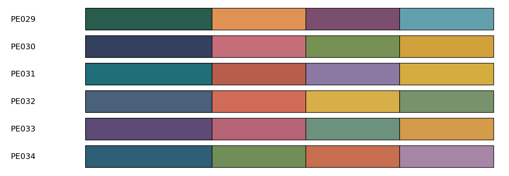
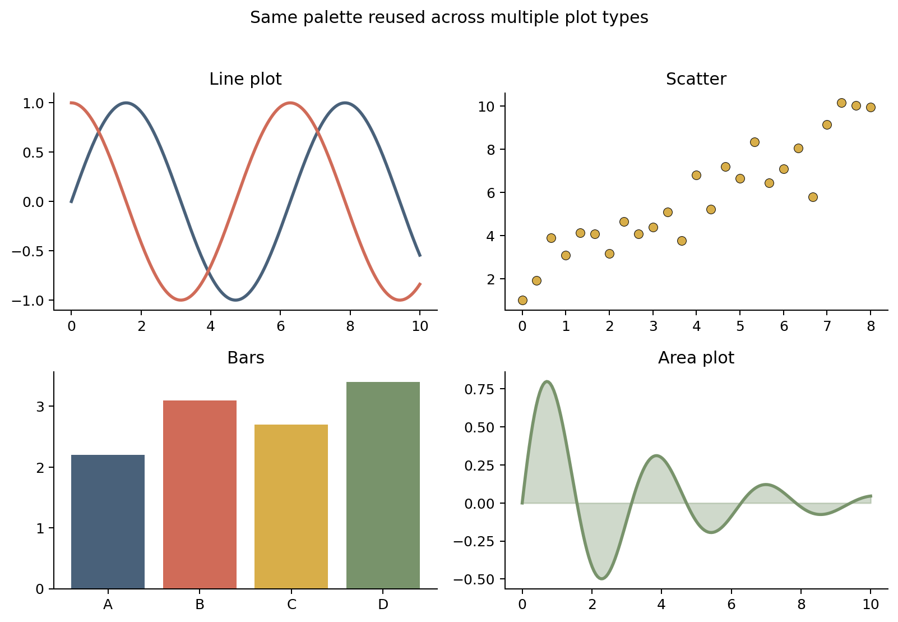

Palette Engine: better colors for scientific plots
A lot of the projects I have planned involve visual outputs, and I think the colors used in graphs and figures are as important as the idea they convey. A proper color selection can give an immediate feeling for the information you want to show, add a new dimension to a plot, or simply make it more pleasant.
At the same time, I often see figures and posters, including some close to home, with weak contrast, colors that feel too heavy together, or combinations that do not quite match. The default colors from plotting software work, but the familiar RGB sequence can become repetitive after appearing in figure after figure.
I often struggle to find a nice set of colors that moves a little away from these defaults, so I decided to create Palette Engine, a small Python tool with color combinations for scientific plotting. The original version had a much broader selection, but it eventually became overwhelming, so I reduced it to a smaller set of selected palettes.
The project began as a way to return random color combinations for different graphs. As I looked more closely at how colors interact, its scope grew to include different background colors, a palette display, and continuous colors interpolated between the colors of a palette. At some point I had to stop adding things. I may extend the project and include more palettes later, but for now I hope the tool is useful as it is.
The palettes are ready to use, but their application still requires judgment from the researcher. Colors may need to be reordered or reduced so that low and high values, meaningful midpoints, and established conventions are represented intuitively for the specific application. The background filter helps avoid combinations that disappear too easily against the selected canvas, but it is not a complete accessibility guarantee. For important categories, color should be combined with clear labels, marker shapes, line styles, or patterns, especially when a figure must remain understandable under different viewing and printing conditions.

Palette Engine currently contains 35 original palettes, ranging from combinations of two to five colors.
The different sizes are useful for common plotting situations: comparing two conditions, separating three or four datasets, or building a slightly larger categorical figure. Every palette has a stable identifier, so a figure can use the same colors again without relying on random selection.
It can return normalized RGB tuples ready for Matplotlib, choose a compatible palette automatically, filter colors for white, black, or a custom background, interpolate between colors in CIELAB space (a color space designed around how people perceive differences between colors) when a larger related set is needed, and return approximate CMYK values for early print planning.
Using a palette in Matplotlib
After cloning and installing the repository, a palette can be selected with a few lines:
from colors_engine import get_palette
from colors_source import palettes
colors, palette_id = get_palette(
palettes,
size=4,
palette_id="PE029",
mode="s",
)The returned colors can be passed directly to Matplotlib:
import matplotlib.pyplot as plt
for index, color in enumerate(colors):
plt.plot(x, y[index], color=color, label=f"Series {index + 1}")
plt.legend()
plt.show()
If more colors are required, Palette Engine can generate a longer, continuous set from the original anchors:
colors, palette_id = get_palette(
palettes,
size=4,
n_out=15,
palette_id="PE034",
)Palette Engine is available on GitHub under the MIT License:
If you use it, adapt it, or find combinations that work particularly well for your figures, I would be happy to hear about it.